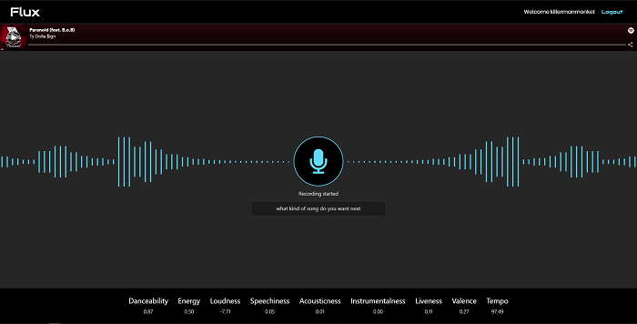

Grant Peterson
AI Plays Snake

AI learns to play Snake using deep learning with neural networks and a genetic algorithm. Includes a dashboard with controls for the evolutionary process, as well as data visualizations for the average fitness of each generation. Includes a playable version of Snake. Built with TensorFlow.js and p5.js.
Flux



Voice controlled smart DJ for Spotify which Leverages wit.ai to process audio input and typed natural language into song recommendations and playback commands. Interfaces directly with active Spotify devices to add songs to Spotify queue and change currently playing song
Readsy


Application for fostering reading in Immaculata Middle School Special Education classes allowing users to upload their books, search for new books,and track the books they’ve read. Includes admin view for teachers to vet and approve books and reviews. Uses Googles Books API to generate thumbnails and descriptions of uploaded books.
Jukebox

Application which uses the Spotify REST API to build unique playlists with high granularity: users can alter up to 12 variables such as Key, Valence, Danceability, etc... combined with factors such as weather and stock market performance to create playlists that will automatically populate their Spotify library.
Pathfinder


Visualizer for pathfinding algorithms including: Djikstra's Algortihm and A*. Includes recursive division maze generation as well as custom wall and weight additions that influence the optimum path.